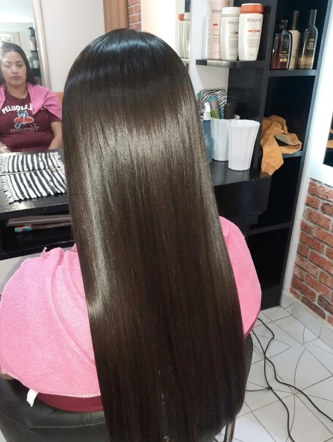
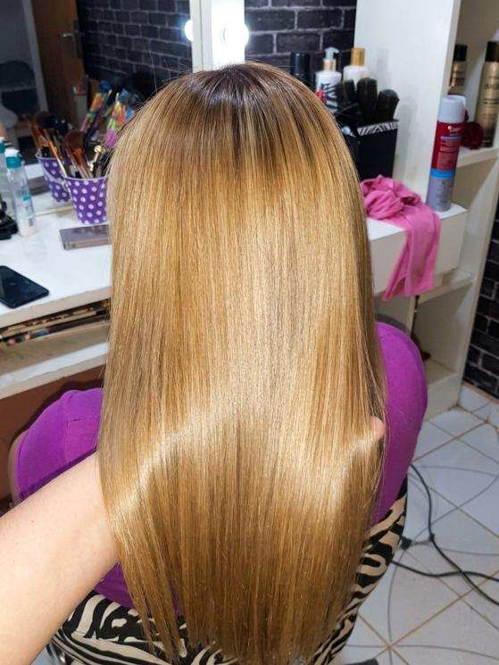
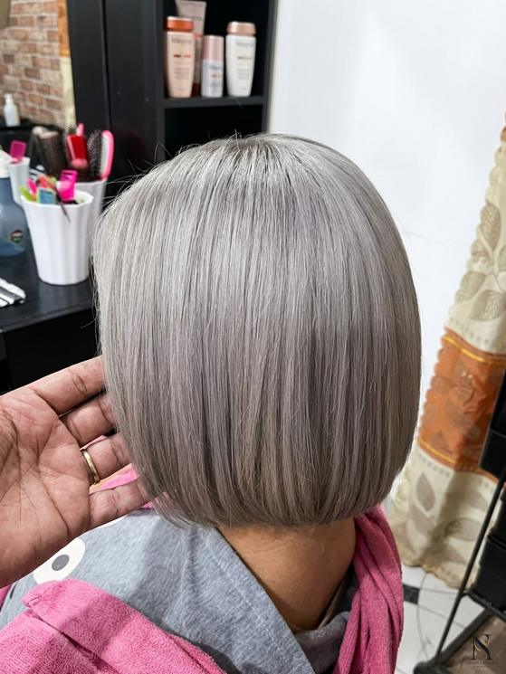
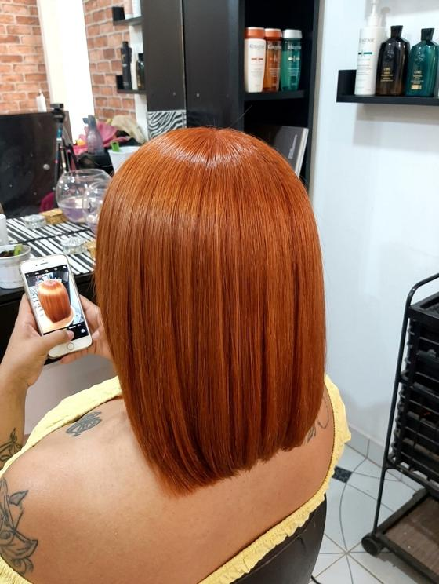
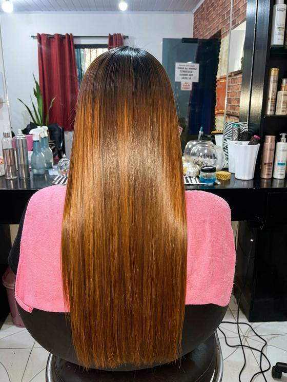

Coiffure
Solo para mujeres auténticas
Peluquería, color y alisados a cargo de la profesional Mirna Colman. Un resultado que se nota, cuida tu cabello y te hace sentir vos misma.
Dos especialidades que nos distinguen y todo lo que necesitás para renovar tu look.
Un alisado con fórmula propia del salón, que no vas a encontrar en otro lugar. Cabello liso, suave y fácil de peinar, aplicado con el cuidado de una profesional.
Mirna es experta en rubios: desde el platinado más frío hasta el dorado más cálido, siempre a la medida de tu tono de piel y de tu cabello.
Cortes, peinados y tratamientos para cada ocasión.
Cobertura de canas, mechas, reflejos y cambios de look.
Alisados, rubios y colores reales de clientas del salón.





Un buen rubio se planifica. Mirna evalúa tu base y tu cabello antes de empezar, para que el color salga parejo, luminoso y sano.
Acá no seguimos una moda: realzamos lo que ya sos.
¿Querés vender tu cabello o buscás cabello natural? Escribinos y lo conversamos.
Escribinos por WhatsApp y coordinamos el día y la hora que mejor te quede.